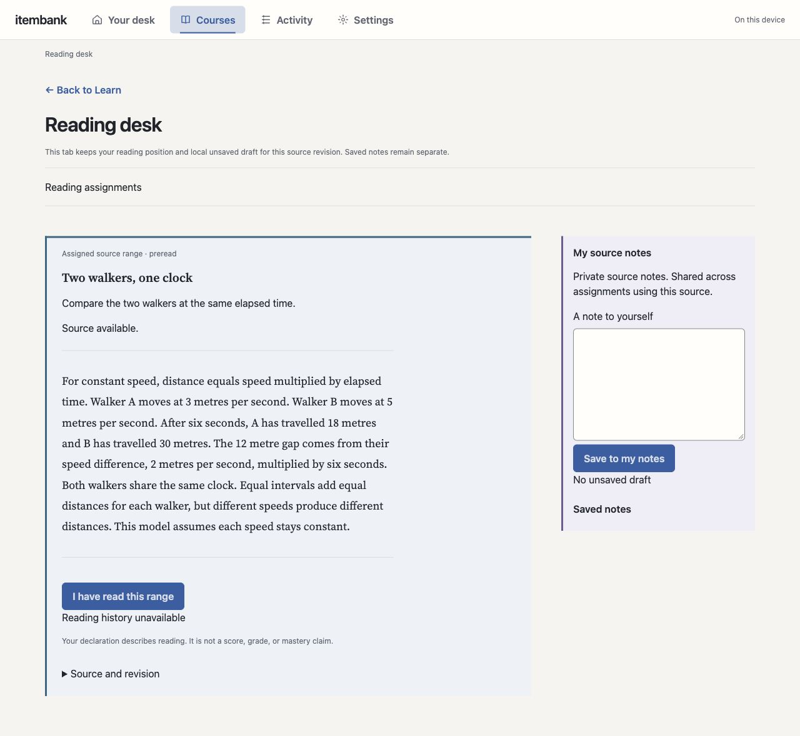
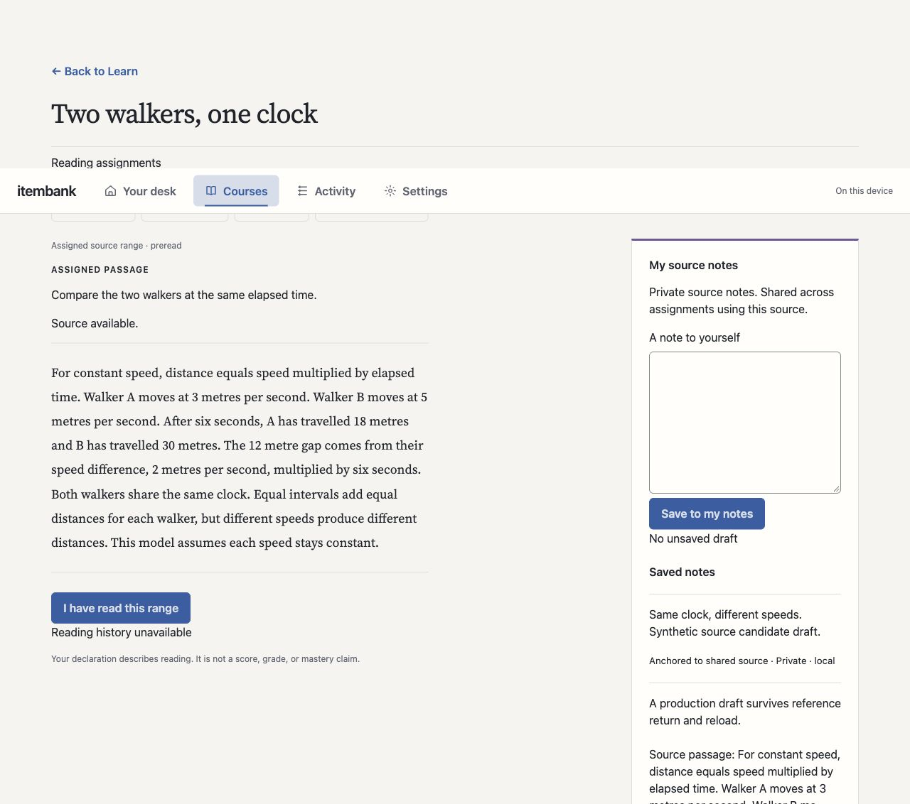
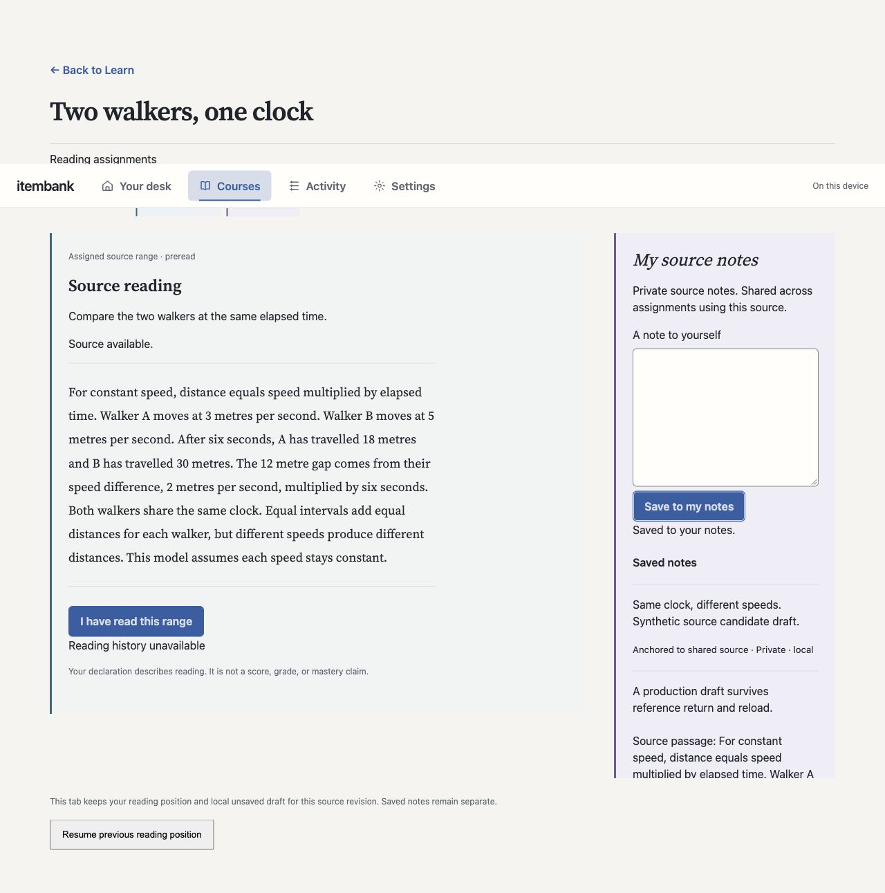
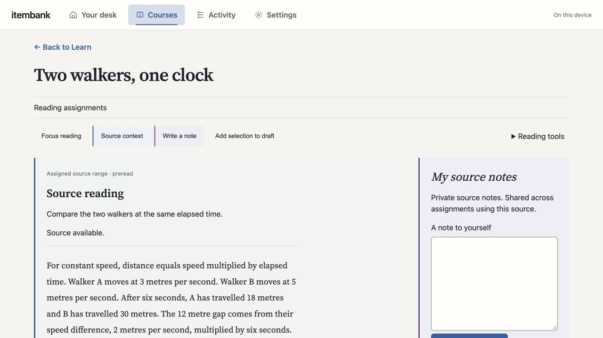

Reading workspace: three passes
The revised pass restores more source and note character while retaining the workspace controls. Your preference remains open.
Same source, three treatments



Revised reading view

Teaching demo
The live demo keeps linked diagrams, a first prediction, worked steps, notes and detour return. Its headings now use plain task labels. Demo feedback remains public and unscored; demo notes use this browser only.
Open the teaching demoThe installed application has not changed.